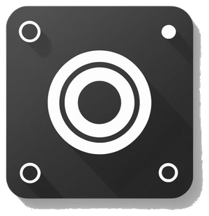

Privacy & Metadata Remover for Android · com.doubleangels.redact
Redact is an open-source Android app built by DoubleAngels that removes EXIF and container metadata (GPS location, device details, timestamps, camera settings, and similar hidden data) from photos and videos, lets you inspect that metadata before sharing, and converts media formats — all without leaving your device.
This Privacy Policy explains, in plain language, exactly what Redact does and does not do with your data. Because Redact is designed around local-only processing, the short version is simple: the app doesn't want your data and doesn't collect it. The rest of this page explains why, in detail, including every permission the app requests and every third-party library it ships with.
We collect none of your personal information. Redact has no account system, no sign-in, no registration, and no server that stores or receives your photos, videos, metadata, or identity. You can verify this directly: the INTERNET permission is the only one that lets the app reach the network at all, and it is used for exactly one optional, opt-in purpose described in Section 4.
Specifically, Redact does not:
The only data that ever leaves your device is the optional, anonymized crash-diagnostic data described in Section 4 — and only if you explicitly turn that setting on.
Android requires apps to declare permissions up front, but declaring a permission does not mean Redact uses it to collect data about you. Here is exactly what each permission is for and whether it's required:
| Permission | What it's used for | Status |
|---|---|---|
| READ_EXTERNAL_STORAGE | Lets the system gallery picker show your photos/videos on Android 12 and earlier, where the modern document picker isn't available. | Android 12 and below only |
| READ_MEDIA_IMAGES / READ_MEDIA_VIDEO | Optional alternative to Android's system document picker, which Redact uses by default on Android 13+ and which needs no media permission at all. | Optional |
| READ_MEDIA_VISUAL_USER_SELECTED | Lets you (on Android 14+) grant Redact access to only specific photos/videos you choose, instead of your entire library. | Optional |
| ACCESS_MEDIA_LOCATION | Lets the Scan screen display the exact GPS coordinates embedded in a file, so you can see what's there. Not required to remove that same GPS data in Clean. | Optional |
| POST_NOTIFICATIONS | Shows progress and completion notifications for Clean/Convert jobs. | Optional, off by default |
| FOREGROUND_SERVICE / FOREGROUND_SERVICE_MEDIA_PROCESSING | Keeps a long-running Clean or Convert batch job alive and shows its progress notification when notifications are enabled. | Used only if notifications are on |
| INTERNET | The only permission that allows network access at all. Used exclusively to send scrubbed crash/error diagnostics to Sentry, and only when you turn on Send Crash Reports in Settings. | Used only for opt-in crash reporting |
Redact never requests broad, standing access to your entire media library by default. On Android 13+, the app's primary file-selection method is Android's built-in document/photo picker, which hands Redact only the specific files you choose — the app never sees the rest of your gallery.
Redact includes an optional crash and error reporting feature powered by Sentry. It is controlled by a single setting — Send Crash Reports — and is off by default. Nothing is sent to Sentry, and Sentry's SDK is not even initialized, unless you explicitly switch this setting on.
When you turn it on, Redact applies the following safeguards before anything leaves your device:
sendDefaultPii = false), and broad device-context and automatic-breadcrumb collection are turned off.content:// and file:// URIs, filesystem paths, GPS coordinate pairs and latitude/longitude fields, and file names from every message, tag, and stack frame. These patterns are redacted even in error messages generated deep inside system or library code.operation_type, mime_type, processing_success, video_width) — arbitrary free-text values are never attached as tags.You can turn crash reporting off again at any time in Settings; doing so immediately stops any further data from being sent. Diagnostic data sent to Sentry is governed by Sentry's own Privacy Policy.
Redact is built on a small number of open-source libraries. Most of them run entirely on your device and have no ability to send data anywhere — they are listed here for full transparency, along with a link to the publisher's privacy policy where one exists.
| Component | Publisher | What it does in Redact | Data it can send off-device |
|---|---|---|---|
| Sentry Android SDK | Functional Software, Inc. (Sentry) | Optional, opt-in crash and performance diagnostics (see Section 4). | Scrubbed device/app info and stack traces — only if you enable Send Crash Reports. |
| AndroidX (Activity, AppCompat, ConstraintLayout, ExifInterface, Fragment, Lifecycle ViewModel) | Google / Android Open Source Project | Core UI framework and on-device EXIF read/write support. | None — these are bundled code libraries, not services; they do not independently transmit data. |
| Material Components for Android | The visual design system (buttons, navigation, theming) rendered on-device. | None. | |
| Media3 (Common, Effect, Transformer) | Google (AndroidX / ExoPlayer project) | Local video transcoding, remuxing, and metadata-safe format conversion for Clean and Convert. | None — all processing happens on-device. |
| Glide | BumpTech (open source) | Loads and renders thumbnails of your locally selected photos inside the app. | None — reads only local files you've already selected; no network calls of its own. |
| Apache Commons Imaging | Apache Software Foundation | Lossless JPEG EXIF stripping used by the Clean feature. | None — a local parsing library with no network access. |
| LeakCanary | Block, Inc. (Square, open source) | Memory-leak detection during development only. | None — included only in debug builds and not shipped in the Google Play release APK. |
| Google Play Store (distribution) | Installs, updates, and verifies the app if you downloaded it from Google Play. | Handled entirely by the Play Store platform under Google's own Privacy Policy — not by code inside Redact. |
Redact does not use Firebase, Google Analytics, any Google Play Services SDK, AdMob, or any other advertising or analytics library. If a dependency is ever added or removed in a future release, this table will be updated to match — you can always check the current list yourself in the app's public build configuration.
Cleaned and converted files are saved to Pictures/Redact or Movies/Redact in your device's own MediaStore — ordinary folders you control, back up, or delete like any other photo or video on your phone. Redact never relocates these files off your device.
When you share a file into Redact from another app, a temporary stripped copy is created in the app's private cache, handed to your chosen share target, and then deleted shortly afterward. Settings let you optionally overwrite temporary files (1, 3, or 7 passes) before deletion for extra assurance, though this has limited effect on modern flash storage, as noted in the app itself. Clear Cache on Startup automatically removes cache files older than 24 hours, and you can clear temporary files manually from Settings at any time.
Because Redact processes your media locally and has no account system or backend database, there is no central server holding your photos, videos, or personal information for an attacker to compromise. The app's network access is limited to the single opt-in diagnostic channel described in Section 4, which uses HTTPS.
The app disables cleartext network traffic entirely (usesCleartextTraffic="false") and disables Android's auto-backup of app data (allowBackup="false") so app state can't be extracted through device backups. Because the full source code is public, anyone can independently audit these claims rather than take our word for it.
This policy, the Redact GitHub repository, and the Google Play Store listing may link to external sites (such as GitHub, Sentry, or Google's own policies). We have no control over and assume no responsibility for the content, privacy practices, or terms of any third-party site. We encourage you to review the privacy policy of any site you visit.
Redact does not collect personal information from anyone, regardless of age, because it does not collect personal information at all. The app contains no account creation, no chat or social features, and no mechanism for a user of any age to submit personal data to us. If you are a parent or guardian with questions about your child's use of Redact, you're welcome to contact us using the details in Section 12.
If you are located in the EEA, UK, or Switzerland, data protection law gives you rights to access, correct, delete, restrict, or port your personal data, and to object to its processing. Because Redact does not collect or process personal data about you in the first place, most of these rights have nothing to act on. If you believe any data about you has reached us — for example through a message you sent — contact us and we will address it promptly.
Redact does not sell or share personal information, and does not collect personal information as defined by the CCPA/CPRA in the ordinary course of operating the app. Accordingly, there is no sale or sharing to opt out of. California residents may still contact us with any privacy question using the details below.
We may update this Privacy Policy from time to time, for example when a dependency changes or a new optional feature is added. Any update will be posted on this page with a revised "Last updated" date at the top. We encourage you to review this page periodically, especially before enabling optional features such as crash reporting.
This policy was last updated on October 5, 2026.
Questions, feedback, or privacy requests about Redact can be sent to jzgm2llm@addy.io, or filed as an issue on GitHub.